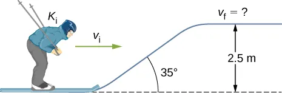
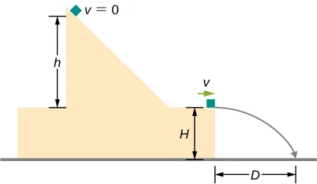
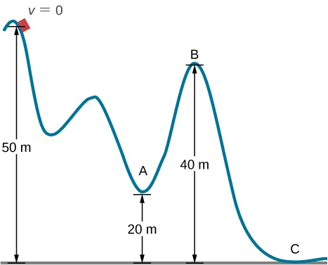

C6.X Problems#
Problem C6.1
A cat’s crinkle ball toy of mass 15 g is thrown straight up with an initial speed of 3.0 m/s. Assume in this problem that air drag is negligible.
What is the kinetic energy of the ball as it leaves the hand?
How much work is done by the gravitational force during the ball’s rise to its peak?
What is the change in the gravitational potential energy of the ball during the rise to its peak?
If the gravitational potential energy is taken to be zero at the point where it leaves your hand, what is the gravitational potential energy when it reaches the maximum height?
What if the gravitational potential energy is taken to be zero at the maximum height the ball reaches, what would the gravitational potential energy be when it leaves the hand?
What is the maximum height the ball reaches?
This problem is a slightly modified version from OpenStax. Access for free at https://openstax.org/books/university-physics-volume-1/pages/8-problems
# DIY Cell
Show code cell source
%reset -f
import numpy as np
import sympy as sym
m = 15E-3
v1 = 3.0
g = 9.81
# Part 1
k1 = 0.5*m*v1**2
print('Kinetic energy when it leaves hand: '+str(k1)+' J')
# Part 2
# w_net = dk
# w_net = fg
k2 = 0.0
dk = k2 - k1
w_net = dk
w_g = w_net
print(' ')
print('The work done by gravity: '+str(w_g)+' J')
# Part 3
# w_g = -du
du = -w_g
print(' ')
print('Change in gravitational potential energy: '+str(du)+' J')
# Part 4
u1 = 0.0
u2 = u1 + du
print(' ')
print('Gravitational potential energy at max. height: '+str(u2)+' J')
# Part 5
u2 = 0.0
u1 = u2 - du
print(' ')
print('Gravitational potential energy leaving hand: '+str(u1)+' J')
# Part 6
# No dissipative forces so mechanical energy is conserved:
# k1 + u1 + w_nc = k2 + u2
w_nc = 0.0
h1 = 0 #we are free to choose reference height.
h2 = sym.Symbol('h2')
v2 = 0
eq = 0.5*m*v2**2 + m*g*h2 - 0.5*m*v1**2 - m*g*h1 - w_nc
sol = sym.solve(eq, h2)
print(' ')
print('Maximum height: '+str(sol[0])+' m')
Show code cell output
Kinetic energy when it leaves hand: 0.0675 J
The work done by gravity: -0.0675 J
Change in gravitational potential energy: 0.0675 J
Gravitational potential energy at max. height: 0.0675 J
Gravitational potential energy leaving hand: -0.0675 J
Maximum height: 0.458715596330275 m
Problem C6.2
A boy throws a ball of mass 0.25 kg straight upward with an initial speed of 20.0 m/s. When the ball returns to the boy, its speed is 17 m/s. How much much work does air resistance do on the ball during its flight?
This problem is a slightly modified version from OpenStax. Access for free at https://openstax.org/books/university-physics-volume-1/pages/8-problems
# DIY Cell
Show code cell source
%reset -f
import sympy as sym
#values giving
m = 0.25
v1 = 20.0
v2 = 17
g = 9.81
#unknown
w_air = sym.Symbol('w_air')
#let y = 0 m be the initial and final height
y1 = 0
y2 = 0
e1 = 0.5*m*v1**2 + m*g*y1
e2 = 0.5*m*v2**2 + m*g*y2
#equation to be solved: e1 + w_air = e2
eq1 = e2 - e1 - w_air
sol = sym.solve(eq1,w_air)
print('Work done by air drag = '+str(sol[0]))
Show code cell output
Work done by air drag = -13.8750000000000
Problem C6.3
Using energy considerations and assuming negligible air resistance, show that a rock thrown from a bridge 20.0 m above water with an initial speed of 15.0 m/s strikes the water with a speed of 24.8 m/s independent of the direction thrown.
This problem is a slightly modified version from OpenStax. Access for free at https://openstax.org/books/university-physics-volume-1/pages/8-problems
# DIY Cell
Show code cell source
%reset -f
import sympy as sym
#values giving
h1 = 20.0
h2 = 0.0
v1 = 15.0
g = 9.81
#unknown
v2 = sym.Symbol('v2')
#conservation of energy: k1 + u1 = k2 + u2 :: mass divideds out in all terms
eq1 = 0.5*v2**2 + g*h2 - 0.5*v1**2 - g*h1
sol = sym.solve(eq1,v2)
print('Speed upon impact = '+str(sol[1]))
Show code cell output
Speed upon impact = 24.8475350890184
Problem C6.4
A 100.0 kg man is skiing across level ground at a speed of 8.0 m/s when he comes to the small slope 1.8 m higher than ground level shown in the following figure.
If the skier coasts up the hill, what is his speed when he reaches the top plateau? Assume friction between the snow and skis is negligible.
What is his speed when he reaches the upper level if an 80.0 N frictional force acts on the skis?
This problem is a slightly modified version from OpenStax. Access for free at https://openstax.org/books/university-physics-volume-1/pages/8-problems
# DIY Cell
Show code cell source
%reset -f
import sympy as sym
import numpy as np
#values giving
m = 100.0
v1 = 8.0
dh = 1.8
ff = 80.0
d = 8.0
g = 9.81
#unknown
v2 = sym.Symbol('v2')
#Part 1
#conservation of energy: k1 + u1 = k2 + u2 :: mass divideds out in all terms
eq1 = 0.5*v2**2 + g*dh - 0.5*v1**2
sol = sym.solve(eq1,v2)
print('Part 1: Speed at top plateau = '+str(sol[1]))
#Part 2
#work done by friction
theta = 180.0*np.pi/180.0 #angle between friction and displacement vectors
w_f = ff*d*np.cos(theta)
#work-energy: k1 + u1 + W_NC = k2 + u2
eq1 = 0.5*m*v2**2 + m*g*dh - 0.5*m*v1**2 - w_f
sol = sym.solve(eq1,v2)
print('Part 2: Speed at top plateau = '+str(sol[1]))
Show code cell output
Part 1: Speed at top plateau = 5.35574457942124
Part 2: Speed at top plateau = 3.98547362304658
Problem C6.5
A baseball of mass 0.25 kg is hit at home plate with a speed of 40 m/s. When it lands in a seat in the left-field bleachers a horizontal distance 120 m from home plate, it is moving at 30.0 m/s. If the ball lands 20.0 m above the spot where it was hit, how much work is done on it by air resistance?
This problem is a slightly modified version from OpenStax. Access for free at https://openstax.org/books/university-physics-volume-1/pages/8-problems
# DIY Cell
Show code cell source
%reset -f
import sympy as sym
#values giving
m = 0.25
v1 = 40.0
dx = 120.0
v2 = 30.0
dy = 20.0
g = 9.81
#unknown
w_air = sym.Symbol('w_air')
#work-energy: k1 + u1 + w_air = k2 + u2
eq1 = 0.5*m*v2**2 + m*g*dy - 0.5*m*v1**2 - w_air
sol = sym.solve(eq1,w_air)
print('Work done by air drag = '+str(sol[0]))
Show code cell output
Work done by air drag = -38.4500000000000
Problem C6.6
A 60.0 kg skier with an initial speed of 12.0 m/s coasts up a 2.50 m high rise as shown. Find her final speed at the top, given that the coefficient of friction between her skis and the snow is 0.80.
This problem is a slightly modified version from OpenStax. Access for free at https://openstax.org/books/university-physics-volume-1/pages/8-problems
# DIY Cell
Show code cell source
%reset -f
import sympy as sym
import numpy as np
#values giving
m = 60.0
v1 = 12.0
dy = 2.5
theta = 35*np.pi/180.
mu = 0.80
g = 9.81
#unknown
v2 = sym.Symbol('v2')
#work done by friction
#normal force
fn = m*g*np.cos(theta)
#force of friction
ff = mu*fn
#length of incline
d = 2.5/np.sin(theta)
#angle between friction and displacement vectors
phi = 180.0*np.pi/180.0
#work by friction
wf = ff*d*np.cos(phi)
#work-energy: k1 + u1 + w_NC = k2 + u2
eq1 = 0.5*m*v2**2 + m*g*dy - 0.5*m*v1**2 - wf
sol = sym.solve(eq1,v2)
print('Speed at top = '+str(sol[1]))
Show code cell output
Speed at top = 6.23774576393102
Problem C6.7
How high a hill can a car coast up (engines disengaged) if work done by friction is negligible and its initial speed is 110 km/h?
If, in actuality, a 750 kg car with an initial speed of 110 km/h is observed to coast up a hill to a height 22.0 m above its starting point, how much thermal energy was generated by friction?
What is the average force of friction if the hill has a slope of 2.5\(^\circ\) above the horizontal?
This problem is a slightly modified version from OpenStax. Access for free at https://openstax.org/books/university-physics-volume-1/pages/8-problems
# DIY Cell
Show code cell source
%reset -f
import sympy as sym
import numpy as np
#given parameters
v1 = 110.0*(1000.0/1.0)*(1.0/3600) #convert from km/hr to m/s
m = 750.0
g = 9.81
#Part 1
v2 = 0.0 #final speed will be zero
#unknown
dh = sym.Symbol('dh')
#work-energy: k1 + u1 = k2 + u2
eq1 = 0.5*m*v2**2 + m*g*dh - 0.5*m*v1**2
sol = sym.solve(eq1,dh)
print('Height of hill = '+str(sol[0]))
#Part 2
dh = 22.0
slope = 2.5*np.pi/180.0
wf = sym.Symbol('wf')
#work-energy: k1 + u1 + w_NC = k2 + u2
eq2 = 0.5*m*v2**2 + m*g*dh - 0.5*m*v1**2 - wf
sol = sym.solve(eq2,wf)
print('Work done by friction = '+str(sol[0]))
print('Thermal energy transferred = '+str(-1.0*sol[0]))
Show code cell output
Height of hill = 47.5862372736311
Work done by friction = -188250.740740741
Thermal energy transferred = 188250.740740741
Problem C6.8
A block leaves a frictionless inclined surface horizontally after dropping off by a height h. Find the horizontal distance D where it will land on the floor, in terms of h, H, and g.
This problem is from OpenStax. Access for free at https://openstax.org/books/university-physics-volume-1/pages/8-additional-problems
# DIY Cell
Problem C6.9
A skier starts from rest and slides downhill. What will be the speed of the skier if he drops by 20.0 meters in vertical height? Ignore any air resistance (which will, in reality, be quite a lot), and any friction between the skis and the snow.
This problem is a slightly modified version from OpenStax. Access for free at https://openstax.org/books/university-physics-volume-1/pages/8-additional-problems
# DIY Cell
Show code cell source
%reset -f
import sympy as sym
#values giving
v1 = 0.0
dh = -20.0
g = 9.81
#unknown
v2 = sym.Symbol('v2')
#conservation of energy: k1 + u1 = k2 + u2
eq1 = 0.5*v2**2 + g*dh - 0.5*v1**2
sol = sym.solve(eq1,v2)
print('Final speed = '+str(sol[1]))
Show code cell output
Final speed = 19.8090888230630
Problem C6.10
Repeat the preceding problem, but this time, suppose that the work done by air resistance cannot be ignored. Let the work done by the air resistance when the skier goes from A to B along the given hilly path be −2000.0 J. The work done by air resistance is negative since the air resistance acts in the opposite direction to the displacement. Supposing the mass of the skier is 50.0 kg, what is the speed of the skier at point B?
This problem is a slightly modified version from OpenStax. Access for free at https://openstax.org/books/university-physics-volume-1/pages/8-additional-problems
# DIY Cell
Show code cell source
%reset -f
import sympy as sym
#values giving
v1 = 0.0
dh = -20.0
g = 9.81
wf = -2000.0
m = 50.0
#unknown
v2 = sym.Symbol('v2')
#work-energy: k1 + u1 +w_NC = k2 + u2
eq1 = 0.5*m*v2**2 + m*g*dh - 0.5*m*v1**2 - wf
sol = sym.solve(eq1,v2)
print('Final speed = '+str(sol[1]))
Show code cell output
Final speed = 17.6748408762286
Problem C6.11
In an amusement park, a car rolls in a track as shown below. Find the speed of the car at A, B, and C. Note that the work done by the rolling friction is zero since the displacement of the point at which the rolling friction acts on the tires is momentarily at rest and therefore has a zero displacement. Assume the heights are given to two significant figures.
This problem is a slightly modified version from OpenStax. Access for free at https://openstax.org/books/university-physics-volume-1/pages/8-additional-problems
# DIY Cell
Show code cell source
%reset -f
import sympy as sym
#values giving
v1 = 0.0
y1 = 50.0
yA = 20.0
yB = 40.0
yC = 0.0
g = 9.81
#unknown
v2 = sym.Symbol('v2')
#Point A
#work-energy: k1 + u1 = k2 + u2
eq1 = 0.5*v2**2 + g*yA - 0.5*v1**2 - g*y1
sol = sym.solve(eq1,v2)
print('Speed at A = '+str(sol[1]))
#Point B
#work-energy: k1 + u1 = k2 + u2
eq2 = 0.5*v2**2 + g*yB - 0.5*v1**2 - g*y1
sol = sym.solve(eq2,v2)
print('Speed at B = '+str(sol[1]))
#Point C
#work-energy: k1 + u1 = k2 + u2
eq3 = 0.5*v2**2 + g*yC - 0.5*v1**2 - g*y1
sol = sym.solve(eq3,v2)
print('Speed at C = '+str(sol[1]))
Show code cell output
Speed at A = 24.2610799429869
Speed at B = 14.0071410359145
Speed at C = 31.3209195267317
Problem C6.12
A 200.0 g steel ball is tied to a 2.00 m “massless” string and hung from the ceiling to make a pendulum, and then, the ball is brought to a position making a 30.0\(^\circ\) angle with the vertical direction and released from rest. Ignoring the effects of the air resistance, find the speed of the ball when the string
is vertically down.
makes an angle of 20.0\(^\circ\) with the vertical.
makes an angle of 10.0\(^\circ\) with the vertical.
This problem is a slightly modified version from OpenStax. Access for free at https://openstax.org/books/university-physics-volume-1/pages/8-additional-problems
# DIY Cell
Show code cell source
%reset -f
import sympy as sym
import numpy as np
#given parameters
v1 = 0.0
m = 0.200 #in kg, but is not needed for the problem
l = 2.00
h1 = 2.00 - 2.00*np.cos(30.0*np.pi/180.0) #launch height above bottom...so bottom is h = 0
g = 9.81
#Part 1
h2 = 0.0
#unknown
v2 = sym.Symbol('v2')
#work-energy: k1 + u1 = k2 + u2
eq1 = 0.5*v2**2 + g*h2 - 0.5*v1**2 - g*h1
sol = sym.solve(eq1,v2)
print('Speed = '+str(sol[1]))
#Part 2
h2 = 2.00 - 2.00*np.cos(20.0*np.pi/180.0)
#unknown
v2 = sym.Symbol('v2')
#work-energy: k1 + u1 = k2 + u2
eq2 = 0.5*v2**2 + g*h2 - 0.5*v1**2 - g*h1
sol = sym.solve(eq2,v2)
print('Speed = '+str(sol[1]))
#Part 3
h2 = 2.00 - 2.00*np.cos(10.0*np.pi/180.0)
#unknown
v2 = sym.Symbol('v2')
#work-energy: k1 + u1 = k2 + u2
eq3 = 0.5*v2**2 + g*h2 - 0.5*v1**2 - g*h1
sol = sym.solve(eq3,v2)
print('Speed = '+str(sol[1]))
Show code cell output
Speed = 2.29285044333437
Speed = 1.70020633898879
Speed = 2.15893941177090
Problem C6.13
Consider a horiontal and frictionless surface. Block A has a mass of 0.25 kg and is moving with a velocity of +12 m/s when it hits block B. Block is at rest and has a mass of 0.125 kg. After the collision, the two blocks are stuck together. Shortly after the collision, the blocks encounter a \(5.00^\circ\) incline surface with a coefficient of friction of 0.35.
Use conservation of momentum to find the combined velocity after the collision.
What is the normal force of the combined block system on the incline surface?
What is the frictional force on the combined block system on the incline surface?
What is the mechanical energy at the bottom of the incline?
How high (vertical distance) up the incline do they travel before coming to a stop?
# DIY Cell
Show code cell source
%reset -f
import sympy as sym
import numpy as np
#-----------------------
# Part 1
#-----------------------
# Conservation of momentum: stick together after collision
# m1*v1i + m2*v2i = (m1 + m2)*vf
m1 = 0.25
v1i = 12.0
m2 = 0.125
v2i = 0.0
# unknown
vf = sym.Symbol('vf')
eq1 = (m1 + m2)*vf - m1*v1i - m2*v2i
sol = sym.solve(eq1,vf)
vf = sol[0]
print('Final velocity = '+str(vf))
#-----------------------
# Part 2
#-----------------------
# Use free-body-diagram to determine normal force:
m = m1 + m2
g = 9.81
angle = 5.00*np.pi/180.0
fg = m*g
fn = fg*np.cos(angle)
print('Normal force = '+str(fn))
#-----------------------
# Part 3
#-----------------------
# friction force relate to normal force: ff = mu*fn
mu = 0.35
ff = -mu*fn #negative as if positive up along the incline
print('Frictional force = '+str(ff))
#-----------------------
# Part 4
#-----------------------
# let h1 = 0 be at the bottom of the incline plane:
# e1 = k1 + u1
h1 = 0.0
e1 = 0.5*m*vf**2 + m*g*h1
print('Mechanical energy = '+str(e1))
#-----------------------
# Part 5
#-----------------------
# work-energy theorem
# k1 + u1 + wnc = k2 + u2 : wnc = work done by non-conservative forces
# k2 = 0 as it comes to a stop. u1 = 0 since h1 = 0. wnc = work done by friction
# unknown
dx = sym.Symbol('dx')
h2 = sym.Symbol('h2')
#relate distance up incline to height
# h2 = dx*sin(theta)
eq2 = h2 - dx*np.sin(angle)
eq3 = m*g*h2 - ff*dx - 0.5*m*vf**2
sol = sym.solve((eq2,eq3),dx,h2)
print('Final height = '+str(sol[h2]))
Show code cell output
Final velocity = 8.00000000000000
Normal force = 3.664751245605009
Frictional force = -1.2826629359617532
Mechanical energy = 12.0000000000000
Final height = 0.652327893692958